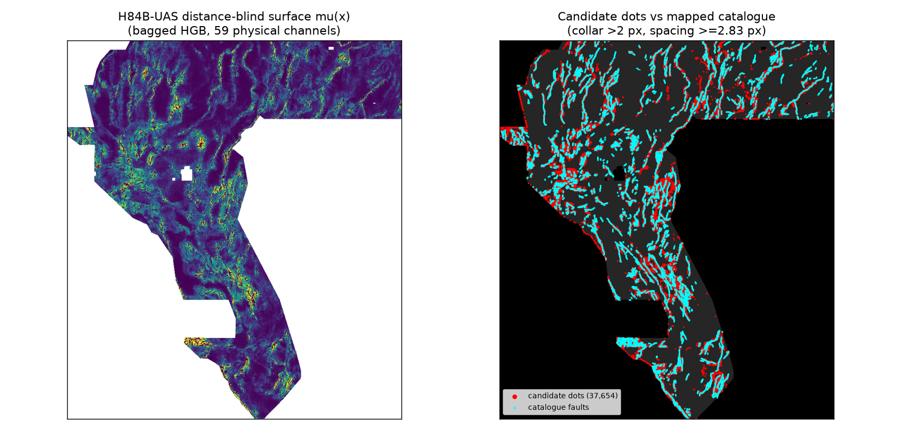

NEGATIVE · DO NOT SUBMIT · RESEARCH ONLY
H84B-UAS candidate TIFF: research only
A new unique GeoTIFF was generated by this parallel lane and passes all 15 local format checks (binary {0,1} float32, 0 NaN, values in [0,1] — it cannot trigger the DrivenData “Predicted values must be in range [0, 1]” error). It is not cleared for submission: its lane hypothesis was falsified on holdout, and its literal 3-px overlap vs the space-filling registry witness is 1.0 (limit 0.70) — the same protocol stop as H84-THMS.
Download candidate TIFF — DO NOT SUBMIT Run card JSON Validator receiptName: gems84b-uas-ctrl-37654dots-20261023-2f774850-zeros
SHA-256: 38f0e886f8f74e760139ad29aabc2c4422d596163cb1aac820b2fdab2a42076d
Note (100/140): H84B-UAS CONTROL surface dist-blind baggedHGB fixed2.83px; 37654 dots; HOLDOUT-DTI 0.1703 UNPROMOTED
What was tested (all numbers HOLDOUT-DTI)
Whole-segment spatially-blocked holdout, 59,282 withheld positives, budget-matched 37,653 dots,
evaluator verified identical to vendor gems57:
| Arm | HOLDOUT-DTI | 95% CI | Reading |
|---|---|---|---|
| A0 fixed 2.83 px spacing (control) | 0.1703 | [0.1457, 0.1983] | reproduced exactly in EXP-3 |
| A1 σ-adaptive spacing | 0.1570 | [0.1311, 0.1872] | falsified — σ tracks decision-boundary ambiguity, not positional error |
| A4 sharpness-adaptive spacing | 0.1561 | [0.1305, 0.1862] | falsified |
| A3 soft fractional emission | 0.1356 | [0.111, 0.1649] | negative, as bang-bang theory predicts |
Leakage canary PASS (max single-channel AUC 0.5735 ≤ 0.90). Uniqueness vs 7 dotted registry rasters (incl. H33): max overlap 0.444, max |ρ| 0.084 — but literal full-registry gate FAILS (1.0 vs witness). Finding: fixed ≈kernel-radius spacing (as in H33) is near-optimal; headroom is ranking quality, not emission geometry.

Correction IR-84B-02
Prior promotion docs claimed H33 dots sit at median 5.385 px / max 12 px from the catalogue.
Direct re-measurement on the SHA-256-verified H33 file: median 19.65 px, max 219.3 px,
65.3% beyond 12 px. The “1.2 km truncation” narrative is retracted
(repo: research/h84b_results_and_h33_correction.md).